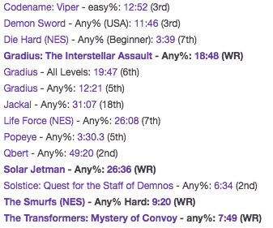

This is an example of fetching best times from speedrun.com for display on a wiki (ie twitch panels). Eventually will add other features (configurable output style?). The eventual goal would be to have uploads to speedrun.com update your twitch page automagically but I'm not sure that's possible given current twitch api.
It will output in the form:

where the time will link to the video and the game will link to the speedrun.com page.
Filter out places above value:
append world record holder:
Give this script credit. Put link to it at the end:
username: